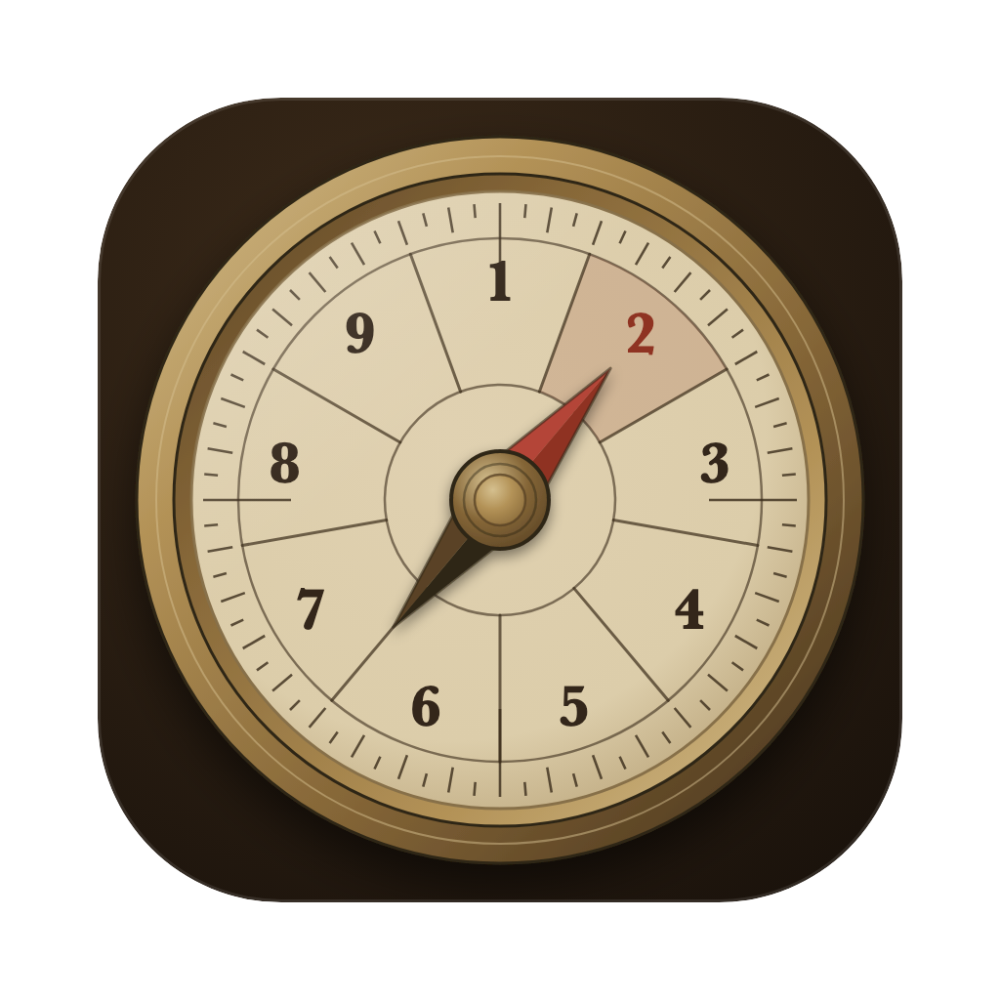
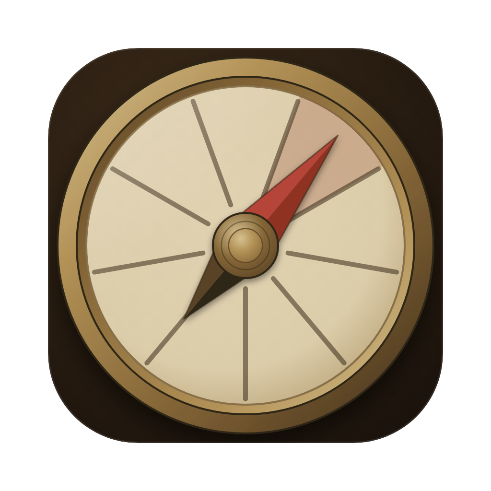
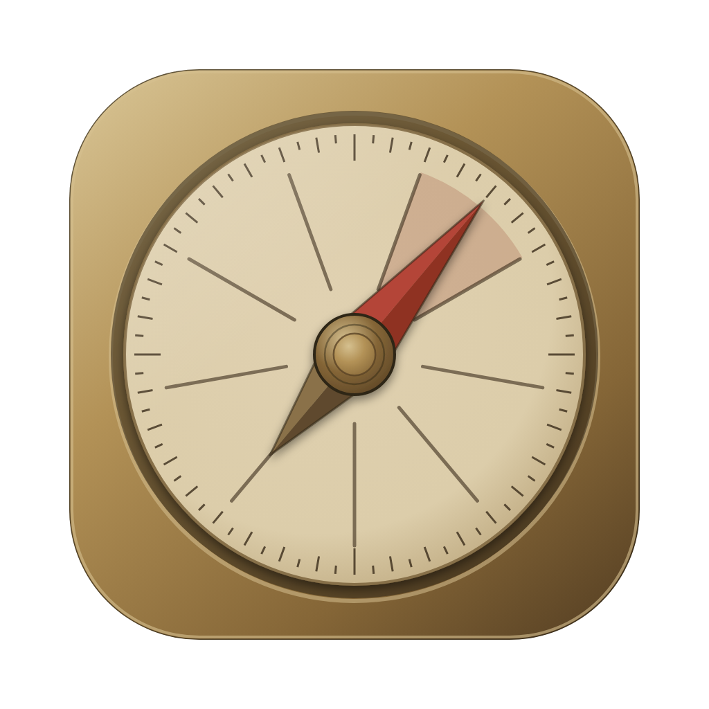

Generated by generate.py from CompassTheme's palette. Each icon is shown at 256 and then down the size ladder (128 / 64 / 32 / 16) on light and dark.

A · FaithfulFull dial: scale, numerals, aimed wedge. Needle points at the aimed numeral.

B · BoldEverything dropped except bezel, nine spokes, needle. Built to survive 32px.C · Sight vanesThe lodestar itself: engraved bezel and an alidade bar with vanes under the needle.

D · Brass tileThe tile is the brass, so it stands apart from dark Dock icons.
Size ladder
|
|
Menu bar glyphs (template images)
Black + alpha only; macOS tints them. Shown at 18pt and 36px, in a light and a dark menu bar.